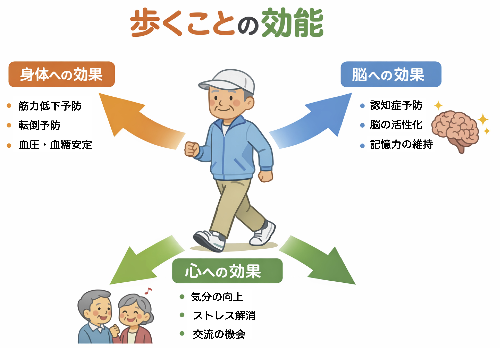

公開日：2026年7月｜最終更新：2026年7月
散歩は健康に良い運動です。しかし、すべての人に必要とは限りません。
大切なのは、「何をしているか」ではなく、「1日の中でどれだけ体を動かしているか」です。
本ページでは、活動レベルという視点から、散歩の必要性を考えます。
筋力低下・認知機能低下・生活習慣病のリスクがあります。
まずは1日5〜10分、歩く・立つ時間を増やしましょう。
散歩は優先して取り入れたい活動です。
最低限は動いていますが、不足気味です。
週3回、10〜20分程度の散歩を取り入れるとよいでしょう。
かなり良い状態です（標準ライン）。
無理に増やす必要はありませんが、余裕があれば軽い散歩も有効です。
健康維持として理想的です。
非常に良い状態です。
散歩は必須ではなく、回復手段として活用できます。
「歩くこと」は、体だけでなく脳と心の運動でもあります。

テニスは「瞬発系・高強度」、散歩は「持久系・低〜中強度」と、運動の性質が異なります。
週2回のテニスだけでは日常活動量が不足することもあり、散歩が補う役割を持ちます。
また軽い散歩は、筋疲労の回復や血流改善にも有効です。
散歩をしなくても、日常生活で体を動かしていれば十分な場合があります。
これらでも十分な活動量になります。
これらでは定期的な有酸素運動が重要です。
家事は、
散歩にこだわらず、自分に合った動き方を見つけることが健康への近道です。